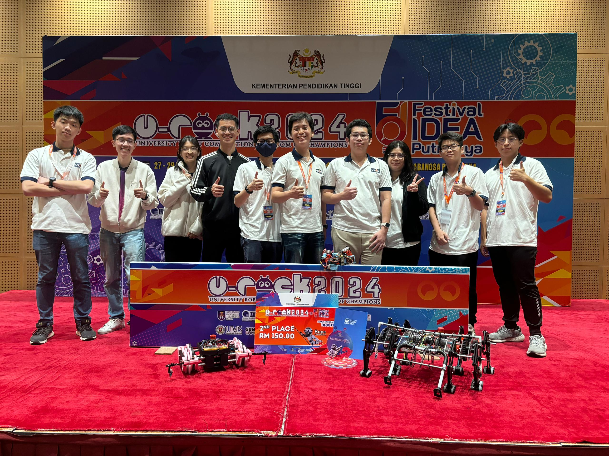
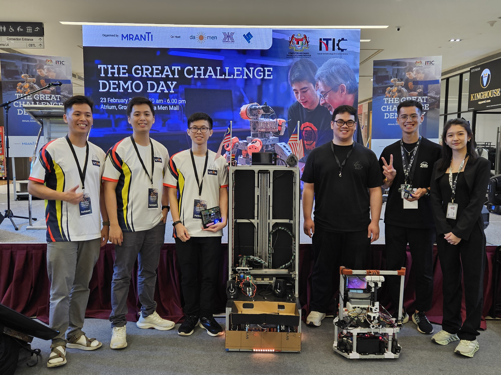
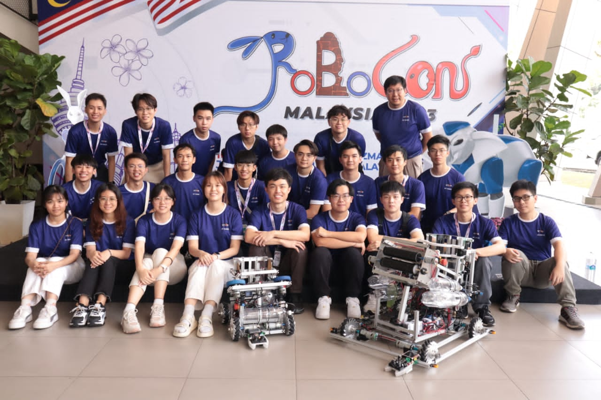
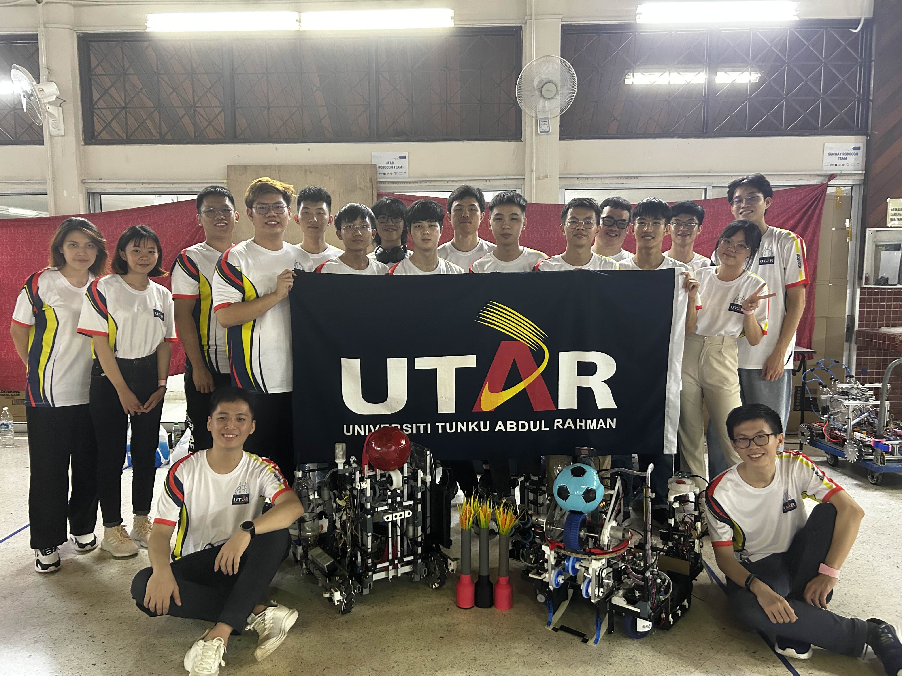
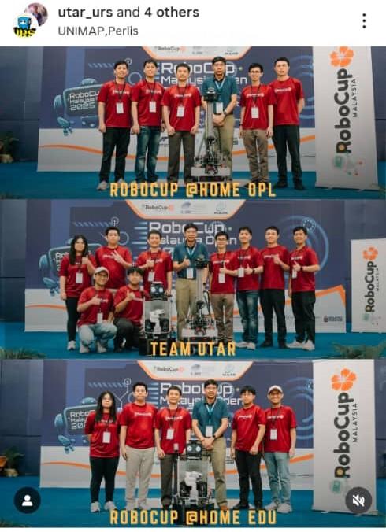

Team Portfolio
Competition Involvements
UTAR ROBOCON Team is not only involved in ROBOCON Competition, but also in other robotics-related competitions such as:
UROCK
UROCK is a robotics competition that our team considered it as every new junior’s entry-level competition. The competition has 3 categories, namely Legged Robot Challenge, Rope Climbing Robot Challenge, and Drone Delivery Challenge. All new juniors who are new to robotics must at least participate in this competition (at least that is the rule at the moment) to gain experience about robot development as well as teamwork and task distribution.
Our team joined in the Legged Robot Challenge and Rope Climbing Robot Challenge.
FIRA
ROBOFUN / The Great Challange
ROBOFUN (later renamed as The Great Challenge) is a presentation-based robotics competition with the objective to solve challenges faced in industries using robotics solution.
There are multiple industrial sectors, namely waste management, retail, search and rescue, cinematography, healthcare, and hospitality, were introduced to participants to select and based their robot design and concept from. You can find more information about it in this website.
2 teams were sent for the competition and both teams managed to reach top 8 and achieved consolation prizes. More information can be found here.
ROBOCON
ROBOCON is a face-paced robotics competition internationally founded by ABU (ASEAN Broadcasting Unit) and coorganized by NHK Japan, with teams competing for completion of mission tasks to achieve highest scores, shortest completion times, or robust robot performance. The competition mainly focuses on robot automation and mechanism designs to solve challenging tasks in each year’s mission.
Each year’s theme and mission tasks are based on the organizing coutry’s culture. For example, 2022 season is based in India, with the mission being Indian’s traditional game lagori or “Seven Stones”; 2023 season is based in Cambodia, with missions related to their oldest traditional game about throwing coins into a hole, but instead of coins, rings were used and holes were replaced with poles of different heights and scores.
Our team competed in the 2022 and 2023 season and managed to reach top 8 teams and received the Best Team Award in the 2023 season. More information can be found here.
Although the 2024 season was cancelled at the last minute, our team was able to showcase technologies used in our robots through exchange programs with USM, Sunway, UM, UPM, Monash, MMU Teams as well as UTM team.
 ROBOCUP
ROBOCUP is a robotics competition more focused on AI and software development of robots. There are many categories to choose from such as @Home, Rescue, Soccer, Logistics, Hackathons and more. Our team currently participated in @Home OPL (Open League) and @Home Edu categories.
Both categories’ theme is related to service robots in household environment, where the missions are the same every year. For OPL category, each team MUST pass the safety check of letting the robot navigate to the referee by itself, then checked for all necessary safety features, lastly leave the room by itself after receiving a permit signal from referee (hand sign, voice, etc.) After passing the robot check (a sequence of safety checks), the missions are divided into 2 stages:
Stage 1:
Carry My Luggage
Receptionist
General Purpose Service Robot (GPSR)
Serve Breakfast
Storing Groceries
Stage 2:
Clean The Table
Enhanced GPSR
Restaurant
Stickler For The Rules
For the @Home Edu category, each team only needs to compete in 3 missions:
Carry My Luggage
Find My Mates
Receptionist
Initially, all teams must prepare a poster as well as present their robot to judges based on the technologies used in the robot. After completing the missions, both categories’ eligible teams will have to prepare a presentation based on a scenario given by judges. For example, how can a robot prepare and serve dinner to a person?
On the last day, there will be a symposium where all teams are compulsory to present their robot You can find more information about the rules here as well as ROBOCUP Malaysia competition here.
Our team competed in ROBOCUP Malaysia 2024 and 2025, where we scored 1st place in @Home Edu category as well as Best Presentation and Best Paper Awards during the symposium.
